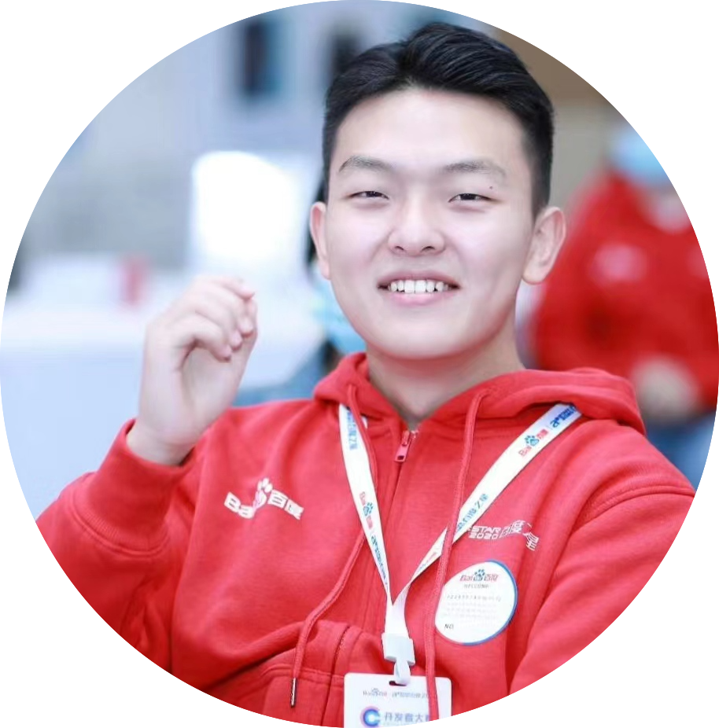
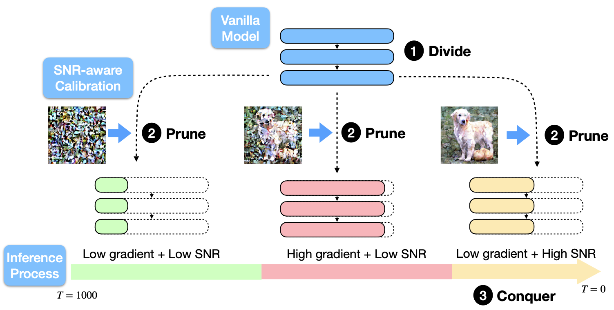
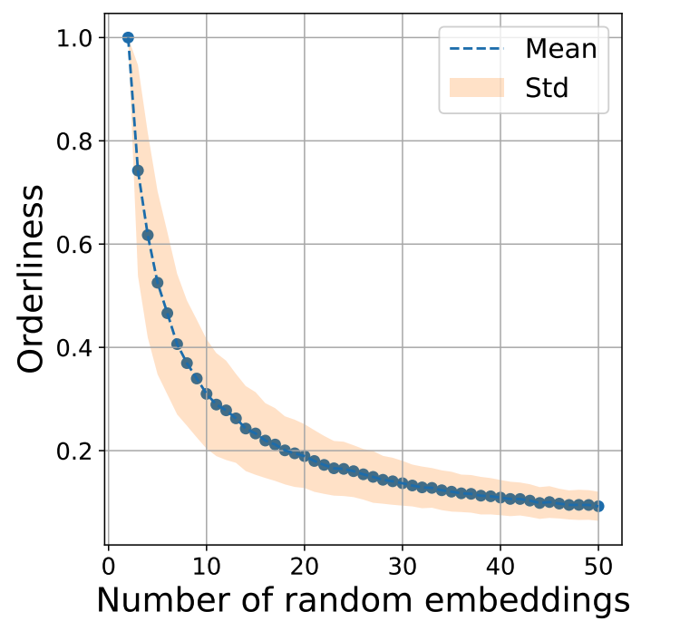
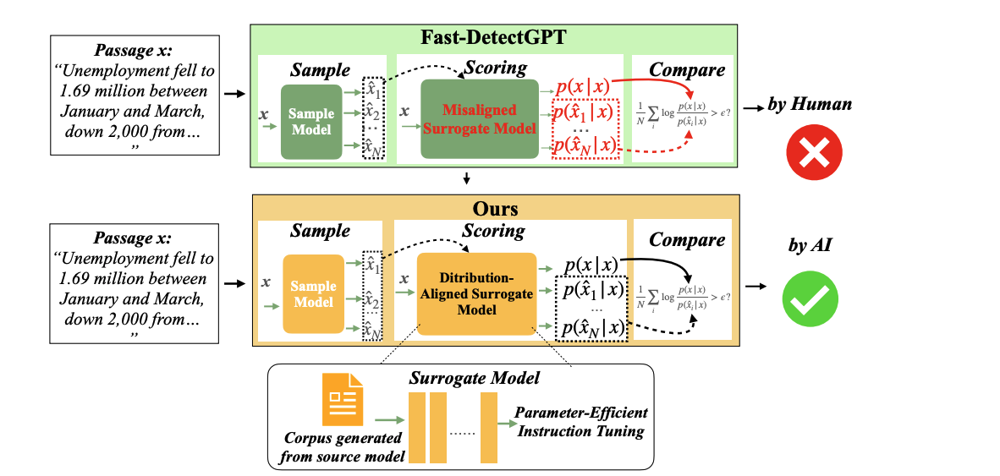
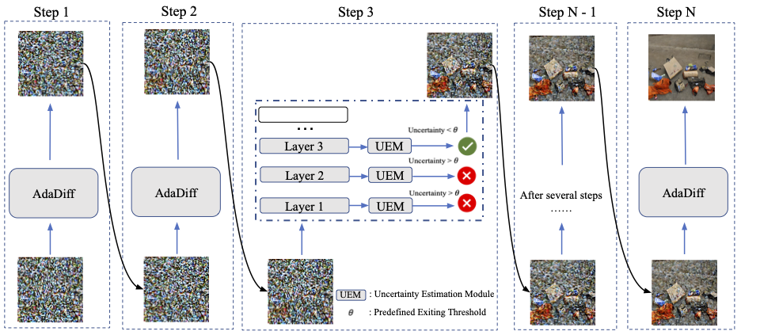
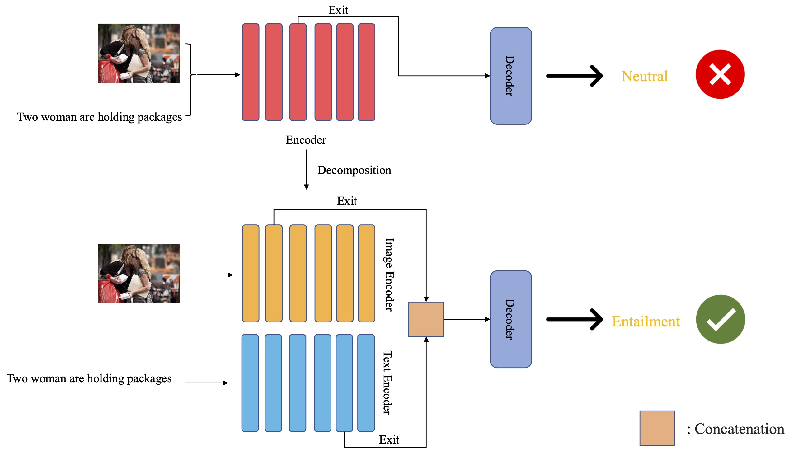
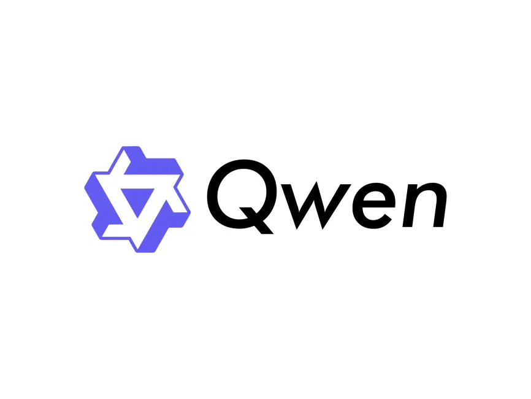
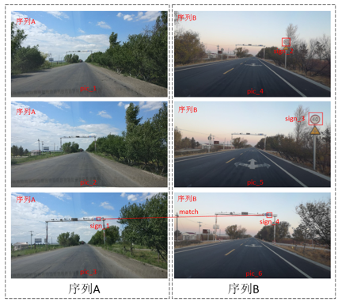

|
Welcome to my website~ My name is Shengkun Tang. You can call me Bryson for short. Currently, I am a research intern in Alibaba Qwen Team. Besides, I am a PhD student of Machine Learning in MBZUAI, under the supervision of Prof. Zhiqiang Shen. During my gap year, I had a wonderful time as an research assistant in DASLab in ISTA , working with Prof. Dan Alistarh. Besides, I had close collaboration with Prof. Dongkuan Xu (NCSU) and Dr. Yaqing Wang (Google DeepMind), working on efficent multi-modal models. I finished B.E. in Remote Sensing at Wuhan University , under the supervision of Prof. Jian Yao and Prof. Xin Su. Email / Google Scholar / Github Last updated: June 27th 2025 |
 |
{kind=link}
- 06/2025: one paper is accepted by ICCV 2025. Congratulations to Bowei!
- 06/2025: Start the research internship in Qwen pretraining team!
- 04/2025: one paper is accepted by 2nd Re-Align Workshop in ICLR 2025. Congratulations to Xuanjie and Cong!
- 02/2025: Happy to release the code and pretrained weights of Bi-Mamba, please check here.
- 08/2024: Start my PhD life in MBZUAI.
- 05/2023: Invited to serve as Reviewer for International Workshop on Resource-Efficient Learning for Knowledge Discovery at KDD 2023.
- 05/2023: Invited to give a talk at 将门创投 on June 8, 2023. Welcome!
- 02/2023: My first paper on accelerating inference of vision language model was accepted by CVPR 2023. Super excited :). Thank all co-authors' support.
- 09/2022: I joined Intelligent Automotive Group(IAG) at SenseTime as a system developer. I will build system for various perception modules of self-driving.
|  |
Bowei Guo, Shengkun Tang, Cong Zeng, Zhiqiang Shen [ICCV 2025] International Conference on Computer Vision, ICCV 2025 Paper |
|  |
Xuanjie Liu, Cong Zeng, Shengkun Tang, Ziyu Wang, Gus Xia [Re-Align Workshop, ICLR 2025] 2nd Workshop on Representational Alignment, ICLR 2025 Paper |
|  |
Cong Zeng*, Shengkun Tang*, Xianjun Yang, Yuanzhou Chen, Yiyou Sun, Yao Li, Haifeng Chen, Wei Cheng, Dongkuan Xu [NeurIPS 2024] The Thirty-eighth Annual Conference on Neural Information Processing Systems arXiv / code |
|  |
Shengkun Tang, Yaqing Wang, Caiwen Ding, Yi Liang, Yao Li, Dongkuan Xu [ECCV 2024] European Conference on Computer Vision arXiv / code |
|  |
Shengkun Tang, Yaqing Wang, Zhenglun Kong, Tianchi Zhang, Yao Li, Caiwen Ding, Yanzhi Wang, Yi Liang, Dongkuan Xu [CVPR 2023] The IEEE/CVF Conference on Computer Vision and Pattern Recognition arXiv / code |

|
Puyuan Yi*, Shengkun Tang*, Jian Yao Preprint, 2021 arXiv / code |

|
Haonan Guo, Xin Su, Shengkun Tang, Bo Du, Liangpei Zhang IEEE Journal of Selected Topics in Applied Earth Observations and Remote Sensing, 2021 |
|  |
Research Intern Mentor: Bo Zheng and Dayiheng Liu |

|
Vision Algorithm Intern; System Developer Project: SenseRobot Chess Robotic, working with Ruodai Li Project: Large-Scale Self-Driving System Development |
|
 |
Ranking: 7/2305 (teams) |
|
|
|
|
This template comes from source code, thanks for his fantastic website templates.
|